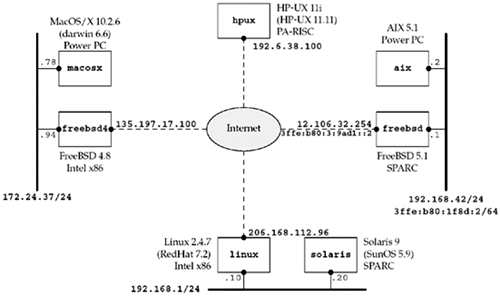

1.9 Test Networks and Hosts
Figure 1.16 shows the various networks and hosts used in the examples throughout the text. For each host, we show the OS and the type of hardware (since some of the operating systems run on more than one type of hardware). The name within each box is the hostname that appears in the text.
The topology shown in Figure 1.16 is interesting for the sake of our examples, but the machines are largely spread out across the Internet and the physical topology becomes less interesting in practice. Instead, virtual private networks (VPNs) or secure shell (SSH) connections provide connectivity between these machines regardless of where they live physically.

The notation "/24" indicates the number of consecutive bits starting from the leftmost bit of the address used to identify the network and subnet. Section A.4 will talk about the /n notation used today to designate subnet boundaries.
The real name of the Sun OS is SunOS 5.x and not Solaris 2.x, but everyone refers to it as Solaris, the name given to the sum of the OS and other software bundled with the base OS.
Discovering Network Topology
We show the network topology in Figure 1.16 for the hosts used for the examples throughout this text, but you may need to know your own network topology to run the examples and exercises on your own network. Although there are no current Unix standards with regard to network configuration and administration, two basic commands are provided by most Unix systems and can be used to discover some details of a network: netstat and ifconfig. Check the manual (man) pages for these commands on your system to see the details on the information that is output. Also be aware that some vendors place these commands in an administrative directory, such as /sbin or /usr/sbin, instead of the normal /usr/bin, and these directories might not be in your normal shell search path (PATH).
netstat -i provides information on the interfaces. We also specify the -n flag to print numeric addresses, instead of trying to find names for the networks. This shows us the interfaces and their names.
linux % netstat -ni
Kernel Interface table
Iface MTU Met RX-OK RX-ERR RX-DRP RX-OVR TX-OK TX-ERR TX-DRP TX-OVR Flg
eth0 1500 049211085 0 0 040540958 0 0 0 BMRU
lo 16436 098613572 0 0 098613572 0 0 0 LRU
The loopback interface is called lo and the Ethernet is called eth0. The next example shows a host with IPv6 support.
freebsd % netstat -ni
Name Mtu Network Address Ipkts Ierrs Opkts Oerrs Coll
hme0 1500 <Link#1> 08:00:20:a7:68:6b 29100435 35 46561488 0 0
hme0 1500 12.106.32/24 12.106.32.254 28746630 - 46617260 - -
hme0 1500 fe80:1::a00:20ff:fea7:686b/64
fe80:1::a00:20ff:fea7:686b
0 - 0 - -
hme0 1500 3ffe:b80:1f8d:1::1/64
3ffe:b80:1f8d:1::1 0 - 0 - -
hme1 1500 <Link#2> 08:00:20:a7:68:6b 51092 0 31537 0 0
hme1 1500 fe80:2::a00:20ff:fea7:686b/64
fe80:2::a00:20ff:fea7:686b
0 - 90 - -
hme1 1500 192.168.42 192.168.42.1 43584 - 24173 - -
hme1 1500 3ffe:b80:1f8d:2::1/64
3ffe:b80:1f8d:2::1 78 - 8 - -
lo0 16384 <Link#6> 10198 0 10198 0 0
lo0 16384 ::1/128 ::1 10 - 10 - -
lo0 16384 fe80:6::1/64 fe80:6::1 0 - 0 - -
lo0 16384 127 127.0.0.1 10167 - 10167 - -
gif0 1280 <Link#8> 6 0 5 0 0
gif0 1280 3ffe:b80:3:9ad1::2/128
3ffe:b80:3:9ad1::2 0 - 0 - -
gif0 1280 fe80:8::a00:20ff:fea7:686b/64
fe80:8::a00:20ff:fea7:686b
0 - 0 - -
netstat -r shows the routing table, which is another way to determine the interfaces. We normally specify the -n flag to print numeric addresses. This also shows the IP address of the default router.
freebad % netstat -nr
Routing tables
Internet:
Destination Gateway Flags Refs Use Netif Expire
default 12.106.32.1 UGSc 10 6877 hme0
12.106.32/24 link#1 UC 3 0 hme0
12.106.32.1 00:b0:8e:92:2c:00 UHLW 9 7 hme0 1187
12.106.32.253 08:00:20:b8:f7:e0 UHLW 0 1 hme0 140
12.106.32.254 08:00:20:a7:6e:6b UHLW 0 2 lo0
127.0.0.1 127.0.0.1 UH 1 10167 lo0
192.168.42 link#2 UC 2 0 hme1
192.168.42.1 08:00:20:a7:68:6b UHLW 0 11 lo0
192.168.42.2 00:04:ac:17:bf:38 UHLW 2 24108 hme1 210
Internet6:
Destination Gateway Flags Netif Expire
::/96 ::1 UGRSc lo0 =>
default 3ffe:b80:3:9ad1::1 UGSc gif0
::1 ::1 UH lo0
::ffff:0.0.0.0/96 ::1 UGRSc lo0
3ffe:b80:3:9adl::1 3ffe:b80:3:9adl::2 UH gif0
3ffe:b80:3:9adl::2 link#8 UHL lo0
3ffe:b80:1f8d::/48 lo0 USc lo0
3ffe:b80:1f8d:1::/64 link#1 UC hme0
3ffe:b80:lf8d:1::1 08:00:20:a7:68:6b UHL lo0
3ffe:b80:lf8d:2::/64 link#2 UC hme1
3ffe:b80:lf8d:2::1 08:00:20:a7:68:6b UHL lo0
3ffe:b80:lf8d:2:204:acff:fe17:bf38 00:04:ac:17:bf:38 UHLW hme1
fe80::/10 ::1 UGRSc lo0
fe80::%hme0/64 link#1 UC hme0
fe80::a00:20ff:fea7:686b%hme0 08:00:20:a7:68:6b UHL lo0
fe80::%hme1/64 link#2 UC hme1
fe80::a00:20ff:fea7:686b%hme1 08:00:20:a7:68:6b UHL lo0
fe80::%lo0/64 fe80::1%lo0 Uc lo0
fe80::1%lo0 link#6 UHL lo0
fe80::%gif0/64 link#8 UC gif0
fe80::a00:20ff:fea7:686b%gif0 link#8 UC lo0
ff01::/32 ::1 U lo0
ff02::/16 ::1 UGRS lo0
ff02::%hme0/32 link#1 UC hme0
ff02::%hme1/32 link#2 UC hme1
ff02::%lo0/32 ::1 UC lo0
ff02::%gif0/32 link#8 UC gif0
Given the interface names, we execute ifconfig to obtain the details for each interface.
linux % ifconfig eth0
eth0 Link encap:Ethernet HWaddr 00:C0:9F:06:B0:E1
inet addr:206.168.112.96 Bcast:206.168.112.127 Mask:255.255.255.128
UP BROADCAST RUNNING MULTICAST MTU:1500 Metric:1
RX packets:49214397 errors:0 dropped:0 overruns:0 frame:0
TX packets:40543799 errors:0 dropped:0 overruns:0 carrier:0
collisions:0 txqueuelen:100
RX bytes:1098069974 (1047.2 Mb) TX bytes:3360546472 (3204.8 Mb)
Interrupt:11 Base address:0x6000
This shows the IP address, subnet mask, and broadcast address. The MULTICAST flag is often an indication that the host supports multicasting. Some implementations provide a -a flag, which prints information on all configured interfaces.
One way to find the IP address of many hosts on the local network is to ping the broadcast address (which we found in the previous step).
linux % ping -b 206.168.112.127
WARNING: pinging broadcast address
PING 206.168.112.127 (206.168.112.127) from 206.168.112.96 : 56(84) bytes of data.
64 bytes from 206.168.112.96: icmp_seq=0 ttl=255 time=241 usec
64 bytes from 206.168.112.40: icmp_seq=0 ttl=255 time=2.566 msec (DUP!)
64 bytes from 206.168.112.118: icmp_seq=0 ttl=255 time=2.973 msec (DUP!)
64 bytes from 206.168.112.14: icmp_seq=0 ttl=255 time=3.089 msec (DUP!)
64 bytes from 206.168.112.126: icmp_seq=0 ttl=255 time=3.200 msec (DUP!)
64 bytes from 206.168.112.71: icmp_seq=0 ttl=255 time=3.311 msec (DUP!)
64 bytes from 206.168.112.31: icmp_seq=0 ttl=64 time=3.541 msec (DUP!)
64 bytes from 206.168.112.7: icmp_seq=0 ttl=255 time=3.636 msec (DUP!)
...
 |